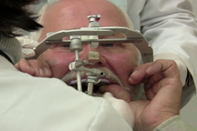

Procedure:
- Properly contour a maxillary record base and occlusion rim to the planned plane of occlusion and proper esthetic and phonetic parameters.
- Place orientation grooves on the occlusal surface of the RBOR and lightly coat with petrolatum jelly. (Fig 01)

Fig 01 - Position the RBOR on the facebow fork using VPS registration material, center the rim at the midline and keep the posterior of the rim aligned with the posterior of the facebow fork.
- Place the RBOR/facebow fork in proper position in the patient’s mouth and have the patient stabilize the complex with their thumbs. (Fig 02)

Fig 02
WHIP MIXⓇ
- Slide the facebow (loosen the toggles, nasion indicator and the three knobs on the top of the facebow assembly) and toggle assembly onto the facebow fork and place the ear pieces into the patient’s external auditory meatus.
- Gently manipulate the facebow until the ear pieces are properly engaged into the correct position. Tighten the three knobs on the top of the facebow assembly.
- Properly position the nasion indicator into the notch at the top of the nose and slide the positioner rod to tighten the assembly into the correct vertical position. Tighten the nasion indicator knob.
- Check the toggle assembly and slide the assembly as close to the patient as possible without causing any interferences with the mechanism.
- Tighten the two toggle assembly bolts until the assembly cannot be twisted in any direction.
- Perform a check to see that the facebow is parallel to the eyes and all knobs and bolts are tight. (Fig 03)
Fig 03 - Loosen the three knobs on the top of the facebow along with the nasion indicator.
- Squeeze the facebow to open the device and remove it from the patient’s external auditory meatus.
- Remove the complete assembly, disinfect properly and proceed to articulate the master cast on the instrument of choice. Refer the manufacturer’s instructions for your instrument for articulation procedures.